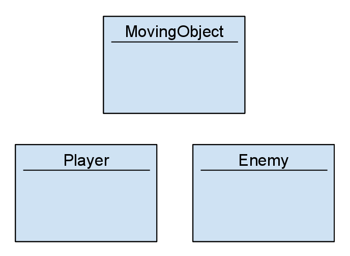
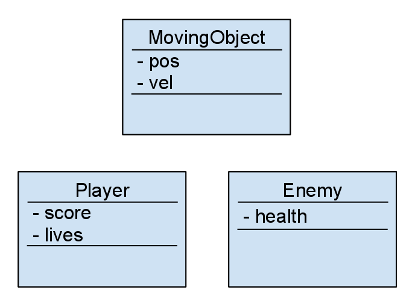
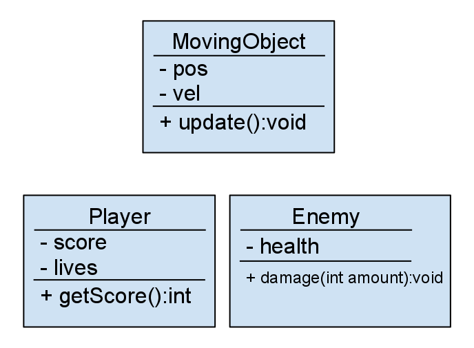
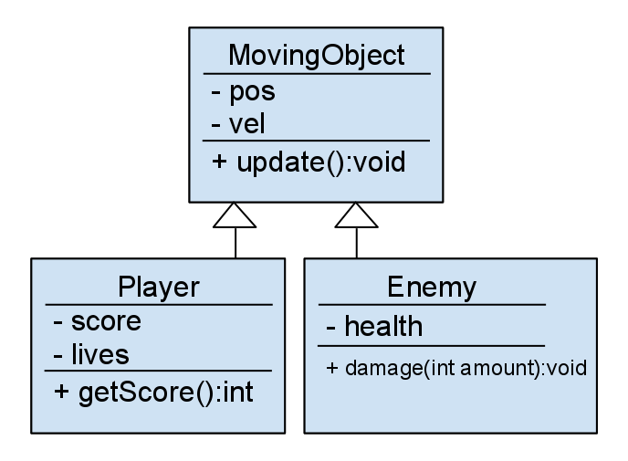
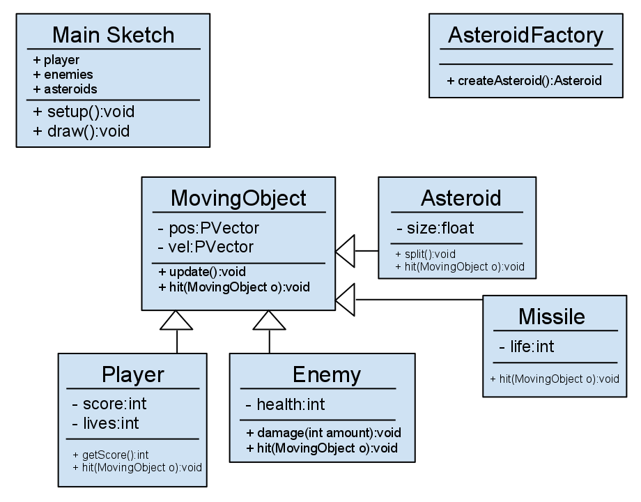

Goals
- Planning a Program
- Ideas
- Requirements
- Scope
- UML: Universal Modeling Language
- A Class
- Fields
- Methods
- Relationships
- Design Patterns
- Decorator
- Factory
- Case Study: Asteroid
Resources
UML
Decorator Pattern
Factory Pattern
Ideas
Every program starts with an idea. Make sure you are working with a topic that you know well and is of interest to you.
Once you have chosen the main idea, research the domain it falls in:
- Painting Application
- Generative Art Application
- Interactive Slideshow
- Data Visualization
- Videogame
- Puzzle Game
- Arcade Game
- Action Game
Why does your application fit into this domain? What makes your application similar to existing applications in this domain, and what makes it different?
Requirements
What does your application need to do? Before programming you should make a detailed list of everything that will be included in your application.
Example for painting application:
- Welcome / start screen
- 3 brush tool buttons
- 1 clear screen button
- 1 save button
- 3 brush tools
- 1 regular brush
- 1 splatter brush
- 1 geometric brush
Scope
Put a time estimate next to your list of requirements. How long will each take? Give yourself lots of room for error.
Is it too much time? Maybe you can cut some requirements? Maybe the idea is beyond your skill level.
Whatever it is, make sure you have scoped your design to something manageable before you start working.
Universal Modeling Language
Disclaimer: this is not the correct way to write UML. There are in fact many ways to do UML diagrams, and we will only be looking at those features that are important to this course and multimedia programming.
If you'd like to learn more, take a look. This lecture should provide you with the basics.
Modeling a Class
A UML diagram for a class begins with the class name at the top. Clearly we are going to define a Moving Object class, followed by two sub-classes: Player and Enemy.
Adding Fields
Now we've added some fields to the classes, and notice this takes on the same structure as if we were to actually code the class. Define the class name, list the fields, list the methods.
The fields are marked with a dash because they are private. If they were public we would use a + sign.
Adding Methods
When adding methods it is important to encapsulate the method signature and the return type. This should give you a clear idea of what the method will be doing based on: name and parameters (signature) and the return type.
Notice how the methods are public since they are written with the + sign.
Relationships
We're only concerned with showing our inheritance relationship in our UML diagrams. This is displayed by drawing a solid white arrow from the subclass pointing to the superclass.
Software Design Patterns

There are several ways to organize objects into a functioning application. Design patters are a way to approach the problem of complexity. Mainly, we cannot have all objects contained in ArrayLists declared in the main program, at some point we'd like those objects to simply take care of themselves. We're going to look at two useful software design patterns that organize complexity in an application.
Decorator Pattern

In the decorator pattern there is a main object that needs to be decorated, Component. The Component contains a list of objects of type Decorator. The Concrete objects here are simply subclasses of the two main classes we're talking about Components and Decorators.
Example: Rewards in a Game
A Player class has an ArrayList of type Reward. As the instance of Player scores points, instances of Reward are created and added to the player's ArrayList. The player instance is now "decorated" with objects of type Reward.
Factory Pattern

In the factory pattern there are objects that need to be created with different properties and returned to some object that contains them. A Creator has a factory method to create a Product which can be though of as simply any object that needs creating. Subclasses of the Creator can override the factory method to return products of different types.
Example: Painting Application
A painting application may have several different instances of a BrushMovement and several different instances of BrushTips. A factory method in the main Brush class can be used to return a single Brush object that combines a BrushMovement with a BrushTip and returns the composite object to the main sketch where it can be added to an ArrayList.
Case Study: Asteroids

Everyone should be familiar with the game asteroids by now, but how would one go about coding it? Let's take a look at the requirements:
Classes:
- MovingObject class
- Player class
- Missile class
- Enemy class
- Asteroid class
- AsteroidFactory class
Functionality:
- Player is created and can shoot missiles
- Asteroids are created from the AsteroidFactory and added a list of active asteroids
- Enemies are created and added to the list of active enemies
- A Player, Enemy, Missile, and Asteroid are all subclasses of MovingObject
- MovingObject will detect collisions between instances of MovingObject
- MovingObject will store and update the location of the instance
- Each subclass of MovingObject will implement a handleCollision method
- The handleCollision method will be overridden and perform the correct function
- There will be player lives and score displayed on the screen
- There will be a pause button
- ...
Basic (incomplete) UML View:
Notice with the UML diagram that if it were complete we would have everything we needed to know in order to create this game. We would know what classes, fields, methods and everything else to implement. It's highly recommended to always create a detailed UML diagram for any application that goes beyond 2 or 3 classes or has more than a few simple functions.